Werkstattcockpit
Verbindet interne Auftragsbearbeitung, Autohausportal, Kundenstatus und Mietwagen in einem gemeinsamen digitalen Ablauf — täglich im Einsatz.
Projekte
Live-Websites aus echten Betrieben, Werkzeuge aus dem eigenen Haus — und Design-Studien, die zeigen, wie Ihr Auftritt aussehen könnte, bevor Sie etwas beauftragen.
01 · Live-Projekte
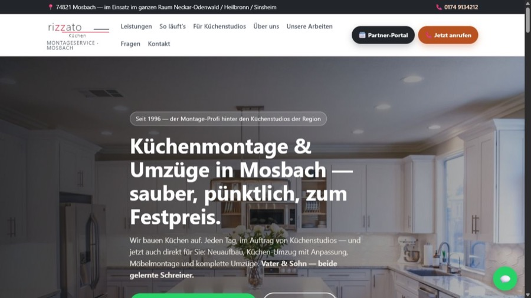
Klare öffentliche Website für Kundschaft — ergänzt um einen getrennten Bereich für die Zusammenarbeit mit Küchenstudios.
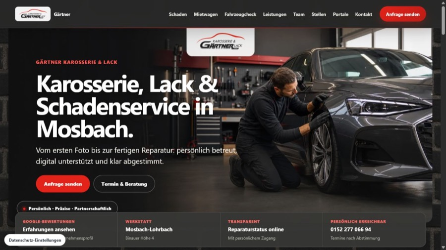
Markengerechte Homepage mit Servicewegen für Schaden, Reparatur, Mietwagen und Portale — der eigene Werkstattbetrieb, aus dem TOMORROWWORKS entstand.
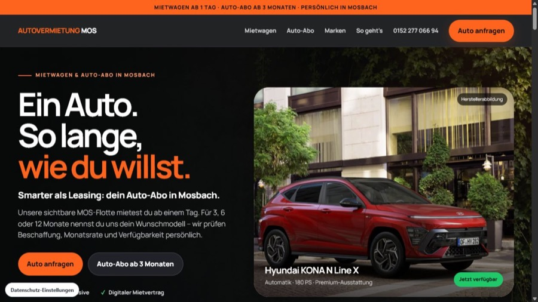
Fahrzeugauswahl, transparente Konditionen und eine direkte Anfrage führen Besucher ohne Umwege zum Ziel.
02 · Eigenentwicklungen
Verbindet interne Auftragsbearbeitung, Autohausportal, Kundenstatus und Mietwagen in einem gemeinsamen digitalen Ablauf — täglich im Einsatz.
Arbeitszeiten einfach erfassen und auswerten — entstanden aus dem eigenen Bedarf, gebaut für den Betriebsalltag.
03 · Design-Studien
Unverbindliche Entwürfe für echte Betriebe der Region — als Gesprächsgrundlage entwickelt, klar als Studien gekennzeichnet.
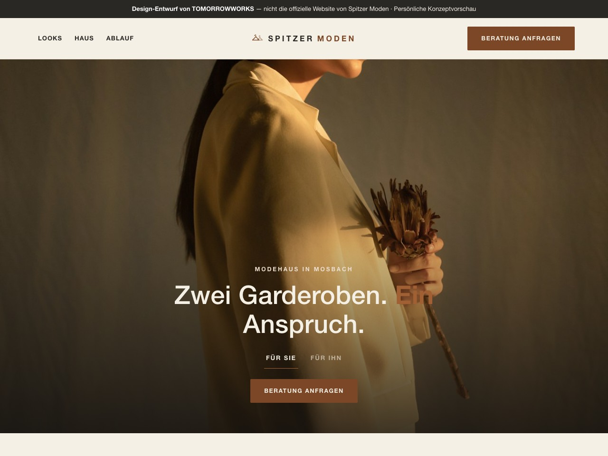
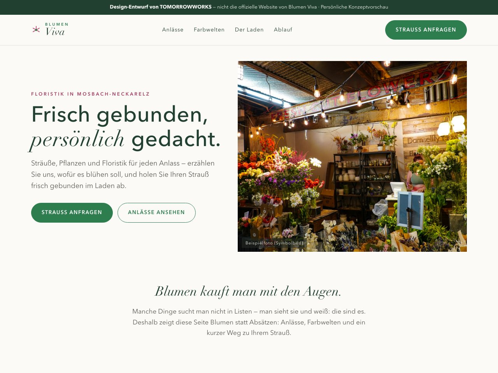
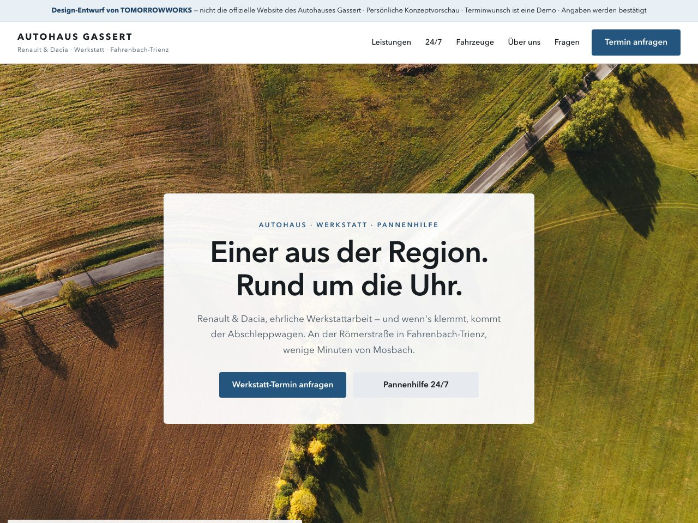
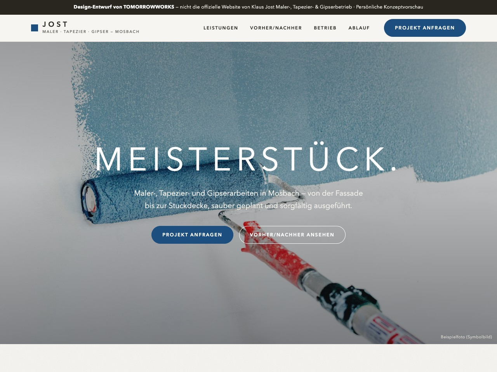
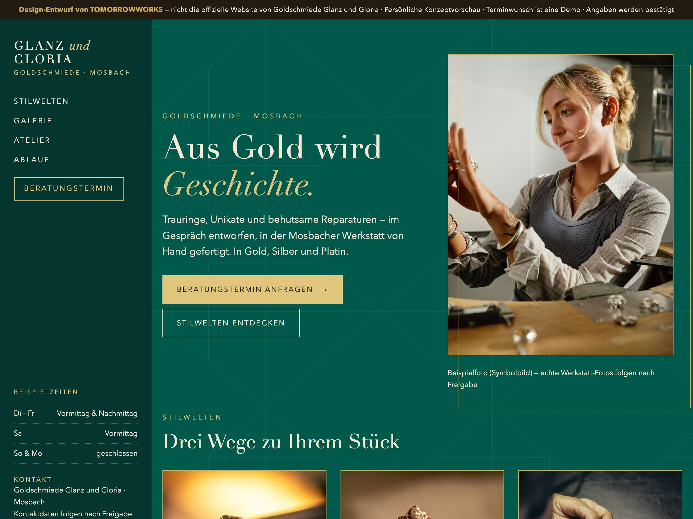
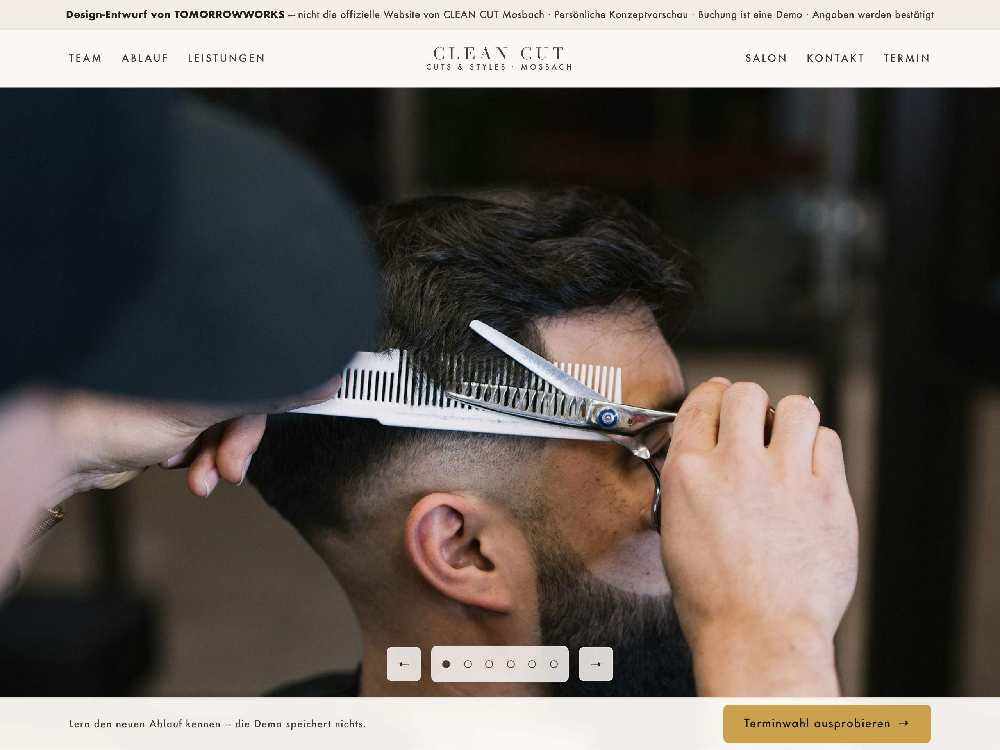
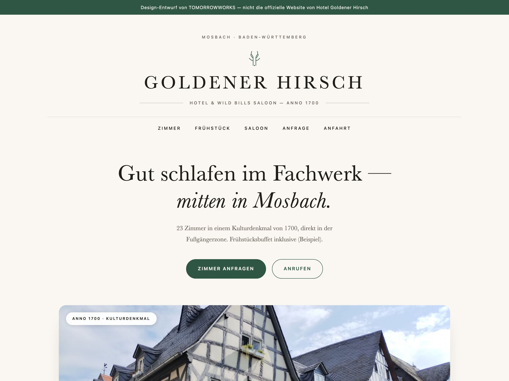
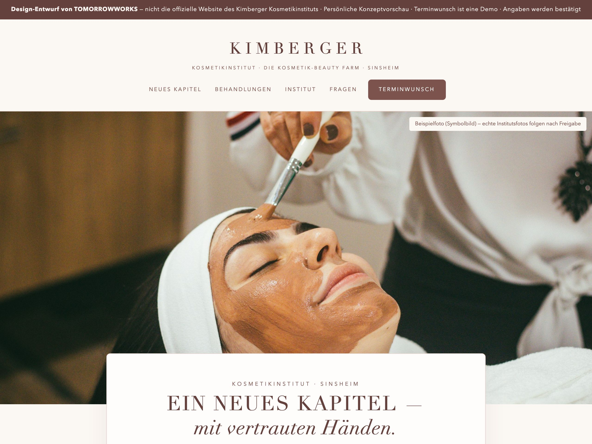
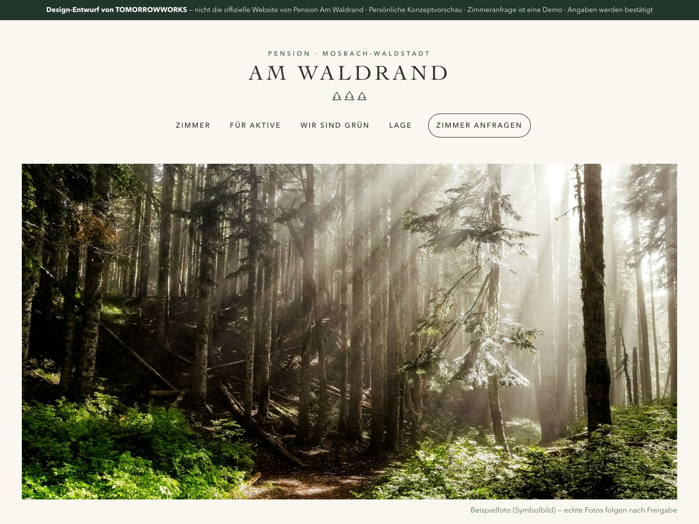
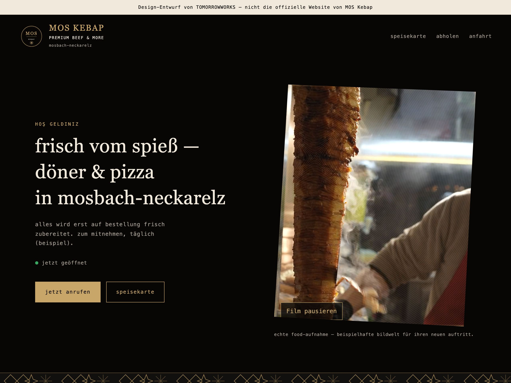
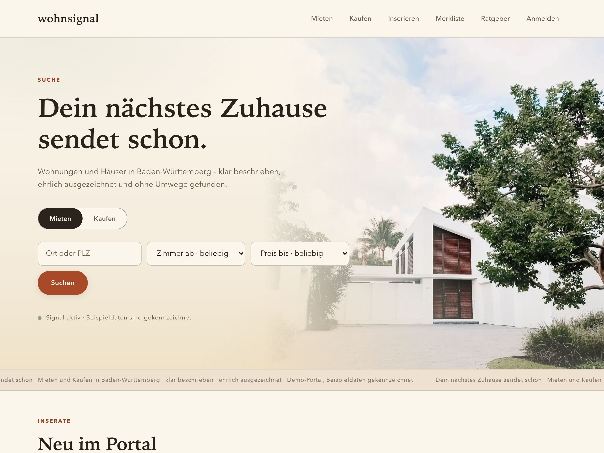
Das Erstgespräch ist kostenlos und unverbindlich — und Ihren Design-Entwurf sehen Sie, bevor Sie etwas bezahlen.